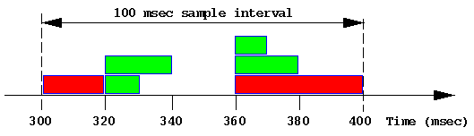

Home · Charts · Time Control
|
|
Home · Charts · Time Control |
pmchart sar |
This chapter of the Performance Co-Pilot tutorial provides some hints on how to interpret and understand the various measures of disk performance.
For an explanation of Performance Co-Pilot terms and acronyms, consult the PCP glossary.
Reconciling sar -d and PCP disk performance metrics |
Both sar and Performance Co-Pilot (PCP) use a common collection of disk performance instrumentation from the block layer in the kernel, however the disk performance metrics provided by sar and PCP differ in their derivation and semantics. This document is an attempt to explain these differences.
It is convenient to define the ``response time'' to be the time to complete a disk operation as the sum of the time spent:
Note that while the CPU time per I/O is assumed to be small in relationship to the times involving operations at the device level, when the system-wide I/O rate is high (and it could be tens of thousands of I/Os per second on a very large configuration), the aggregate CPU demand to support this I/O activity may be significant.
The kernel agents for PCP export the following metrics for each disk spindle:
| Metric | Units | Semantics |
|---|---|---|
| disk.dev.read | number | running total of read I/O requests since boot time |
| disk.dev.write | number | running total of write I/O requests since boot time |
| disk.dev.total | number | running total of I/O requests since boot time, equals disk.dev.read + disk.dev.write |
| disk.dev.blkread | number | running total of data read since boot time in units of 512-byte blocks |
| disk.dev.blkwrite | number | running total of data written since boot time in units of 512-byte blocks |
| disk.dev.blktotal | number | running total of data read or written since boot time in units of 512-bytes, equals disk.dev.blkread + disk.dev.blkwrite |
| disk.dev.read_bytes | Kbytes | running total of data read since boot time in units of Kbytes |
| disk.dev.write_bytes | Kbytes | running total of data written since boot time in units of Kbytes |
| disk.dev.bytes | Kbytes | running total of data read or written since boot time in units of Kbytes, equals disk.dev.read_bytes + disk.dev.write_bytes |
| disk.dev.active | milliseconds | running total (milliseconds since boot time) of time this device has been busy servicing at least one I/O request |
| disk.dev.response | milliseconds | running total (milliseconds since boot time) of the response time for all completed I/O requests |
These metrics are all "counters" so when displayed with most PCP tools, they are sampled periodically and the differences between consecutive values converted to rates or time utilization over the sample interval as follows:
| Metric | Units | Semantics |
|---|---|---|
| disk.dev.read | number per second | read I/O requests per second (or read IOPS) |
| disk.dev.write | number per second | write I/O requests per second (or write IOPS) |
| disk.dev.total | number per second | I/O requests per second (or IOPS) |
| disk.dev.blkread | number per second | 2 * (Kbytes read per second) |
| disk.dev.blkwrite | number per second | 2 * (Kbytes written per second) |
| disk.dev.blktotal | number per second | 2 * (Kbytes read or written per second) |
| disk.dev.read_bytes | Kbytes per second | Kbytes read per second |
| disk.dev.write_bytes | Kbytes per second | Kbytes written per second |
| disk.dev.bytes | Kbytes per second | Kbytes read or written per second |
| disk.dev.active | time utilization | fraction of time device was "busy" over the sample interval (either in the range 0.0-1.0 or expressed as a percentage in the rance 0-100); in this context "busy" means servicing one or more I/O requests |
| disk.dev.response | time utilization | time average of the response time over the interval; this is a slightly strange metric in that values larger than 1.0 (or 100%) imply either device saturation, or controller saturation or a very ``bursty'' request arrival pattern -- in isolation there is no sensible interpretation of the rate converted value this metric |
The sar metrics avque, avwait and avserv are subject to widespread misinterpretation, and so warrant some special explanation. They may be understood with the aid of a simple illustrative example. Consider the following snapshot of disk activity in which the response time has been simplified to be a multiple of 10 milliseconds for each I/O operation over a 100 millisecond sample interval (this is an unlikely simplification, but makes the arithmetic easier).

Each green block represents a 4 Kbyte read. Each red block represents a 16Kbyte write.
The stochastic average of the "queue" length sampled just before each I/O is complete, where ``queue'' here includes those requests in the queue and those being serviced by the device controller. Unfortunately the stochastic average of a queue length is not the same as the more commonly understood temporal or time average of a queue length.
In the table below, R is the contribution to the sum of the response times, Qs is the contribution to the sum of the queue length used to compute the stochastic average and Qt is the contribution to the sum of the queue length × time used to compute the temporal average.
|
Time (msec) |
Event | R (msec) |
Qs | Qt (msec) |
|---|---|---|---|---|
| 300 | Start I/O #1 (write) | |||
| 320 | End I/O #1 | 20 | 1 | 1×20 |
| 320 | Start I/O #2 (read) | |||
| 320 | Start I/O #3 (read) | |||
| 330 | End I/O #2 | 10 | 2 | 2×10 |
| 340 | End I/O #3 | 20 | 1 | 1×10 |
| 360 | Start I/O #4 (write) | |||
| 360 | Start I/O #5 (read) | |||
| 360 | Start I/O #6 (read) | |||
| 370 | End I/O #6 | 10 | 3 | 3×10 |
| 380 | End I/O #5 | 20 | 2 | 2×10 |
| 400 | End I/O #4 | 40 | 1 | 1×20 |
The (stochastic) average response time is sum(R) / 6 = 120 / 6 = 20 msec.
The stochastic average of the queue length is sum(Qs) / 6 = 10 / 6 = 1.67.
The temporal average of the queue length is sum(Qt) / 100 = 120 / 100 = 1.20.
Even in this simple example, the two methods for computing the "average" queue length produce different answers. As the inter-arrival rate for I/O requests becomes more variable, and particularly when many I/O requests are issued in a short period of time followed by a period of quiescence, the two methods produce radically different results.
For example if the idle period in the example above was 420 msec rather than 20 msec, then the stochastic average would remain unchanged at 1.67, but the temporal average would fall to 120/500 = 0.24 ... given that this disk is now idle for 420/500 = 84% of the time one can see how misleading the stochastic average can be. Unfortunately many disks are subject to exactly this pattern of short bursts when many I/Os are enqueued, followed by long periods of comparative calm (consider flushing dirty blocks by bdflush in IRIX or the DBWR process in Oracle). Under these circumstances, avque as reported by sar can be very misleading.
Because multiple operations may be processed by the controller at the same time, and the order of completion is not necessarily the same as the order of dispatch, the notion of individual service time is difficult (if not impossible) to measure. Rather, sar approximates using the total time the disk was busy processing at least one request divided by the number of completed requests.
In the example above this translates to busy for 80 msec, in which time 6 I/Os were completed, so the average service time is 13.33 msec.
For reasons similar to those applying to avserv the average time spent waiting cannot be split between waiting in the queue of requests to be sent to the controller and waiting at the controller while some other concurrent request is being processed. So sar computes the total time spent waiting as the total response time minus the total service time, and then averages over the number of completed requests.
In the example above this translates to a total waiting time of 120 msec - 80 msec, in which time 6 I/Os were completed, so the average waiting time is 6.67 msec.
When run with a -d option, sar reports the following for each disk spindle:
| Metric | Units | PCP equivalent (in terms of the rate converted metrics in Table 2) |
|---|---|---|
| %busy | percent | 100 * disk.dev.active |
| avque | I/O operations | N/A (see above) |
| r+w/s | I/Os per second | disk.dev.total |
| blks/s | 512-byte blocks per second | disk.dev.blktotal |
| w/s | write I/Os per second | disk.dev.write |
| wblks/s | 512-byte blocks written per second | disk.dev.blkwrite |
| avwait | milliseconds | 1000 * (disk.dev.response - disk.dev.active) / disk.dev.total |
| avserv | milliseconds | 1000 * disk.dev.active / disk.dev.total |
The table below shows how the PCP tools and sar would report the disk performance over the 100 millisecond interval from the example above:
| Rate converted PCP metric (like in Table 2) |
sar metrics | Explanation |
|---|---|---|
| disk.dev.read | N/A | 4 reads in 100 msec = 40 reads per second |
| disk.dev.write | w/s | 2 writes in 100 msec = 20 writes per second |
| disk.dev.total | r+w/s | 4 reads + 2 write in 100 msec = 60 I/Os per second |
| disk.dev.blkread | N/A | 4 * 4 Kbytes = 32 blocks in 100 msec = 320 blocks read per second |
| disk.dev.blkwrite | wblks/s | 2 * 16 Kbytes = 64 blocks in 100 msec = 640 blocks written per second |
| disk.dev.blktotal | blks/s | 96 blocks in 100 msec = 960 blocks per second |
| disk.dev.read_bytes | N/A | 4 * 4 Kbytes = 16 Kbytes in 100 msec = 160 Kbytes per second |
| disk.dev.write_bytes | N/A | 2 * 16 Kbytes = 32 Kbytes in 100 msec = 320 Kbytes per second |
| disk.dev.bytes | N/A | 48 Kbytes in 100 msec = 480 Kbytes per second |
| disk.dev.active | %busy | 80 msec active in 100 msec = 0.8 or 80% |
| disk.dev.response | N/A | Disregard (see comments in Table 2) |
| N/A | avque | 1.67 requests (see derivation above) |
| N/A | avwait | 6.67 msec (see derivation above) |
| N/A | avserv | 13.33 msec (see derivation above) |
In practice many of these metrics are of little use. Fortunately the most common performance problems related to disks can be identified quite simply as follows:
In terms of the available instrumentation from the IRIX kernel, one potentially useful metric would be the stochastic average of the response time per completed I/O operation, which in the sample above would be 20 msec. Unfortunately no performance tool reports this directly.
avg_resp = 1000 * disk.dev.response / disk.dev.total;
A real example |
Consider this data from sar -d with a 10 minute update interval:
device %busy avque r+w/s blks/s w/s wblks/s avwait avserv dks0d2 34 12.8 32 988 29 874 123.1 10.5 dks0d5 34 12.5 33 1006 29 891 119.0 10.4
At first impression, queue lengths of 12-13 requests and wait time of 120msec looks pretty bad.
But further investigation is warranted ...
The complicating issue here is that the I/O demand is very bursty and this is what skews the "average" measures.
In this case, the I/O is probably asynchronous with respect to the process(es) doing the writing. Under these circumstances, performance is unlikely to improve dramatically if the aggregate I/O bandwidth was increased (e.g. by spreading the writes across more disk spindles).
However if the I/O is synchronous (e.g. it it was read dominated, or the I/O was to a raw disk), then more I/O would reduce application running time.
There are also hybrid scenarios in which a small number of synchronous reads are seriously slowed down during the bursts of asynchronous writes. In the example above, a read could have the misfortune of being queued behind 300 writes (or delayed for 3 seconds).
Beware of Wait I/O |
PCP (and sar and osview and ...) all report CPU utilization broken down into:
Because I/O does not "belong" to any processor (and in some cases may not "belong" to any current process), a CPU that is "waiting for I/O" is more accurately described as an "idle CPU while at least one I/O is outstanding".
Anomalous Wait I/O time occurs under light load when a small number of processes are waiting for I/O but many CPUs are otherwise idle, but appear in the "Wait for I/O" state. When the number of CPUs increases to 30, 60 or 120 then 1 process doing I/O can make all of the CPUs except 1 look like they are all waiting for I/O, but clearly no amount of I/O bandwidth increase is going to make any difference to these CPUs. And if that one process is doing asynchronous I/O and not blocking, then additional I/O bandwidth will not make it run faster either.
$ source /etc/pcp.conf $ tar xzf $PCP_DEMOS_DIR/tutorials/diskperf.tgz $ pmchart -t 2sec -O -0sec -a diskperf/waitio -c diskperf/waitio.view The system has 4 CPUs, several disks and only 1 process really doing I/O. Note that over time:
|
Copyright © 2007-2010 Aconex |